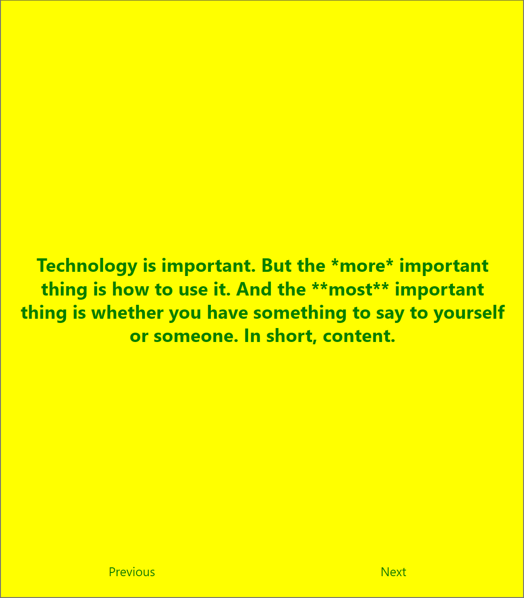

For the most part, the website talks about the creator talks about their favorite HTML tags and CSS, but there is a stament that stuck to me. Technology has always been something that you can access easily, especially around these times. AI is a very good example of how a tool can be used in either a good or bad way. There's websites that allow you to submit slideshows from a class and it gives you flashcards or a simplified set of notes. However, people take advantage of AI and ultimately grow dependent on it.
This article reminds me of the 1985 Mushroom painting from Yayoi Kusama due to the brightful colors that contrast with one another.